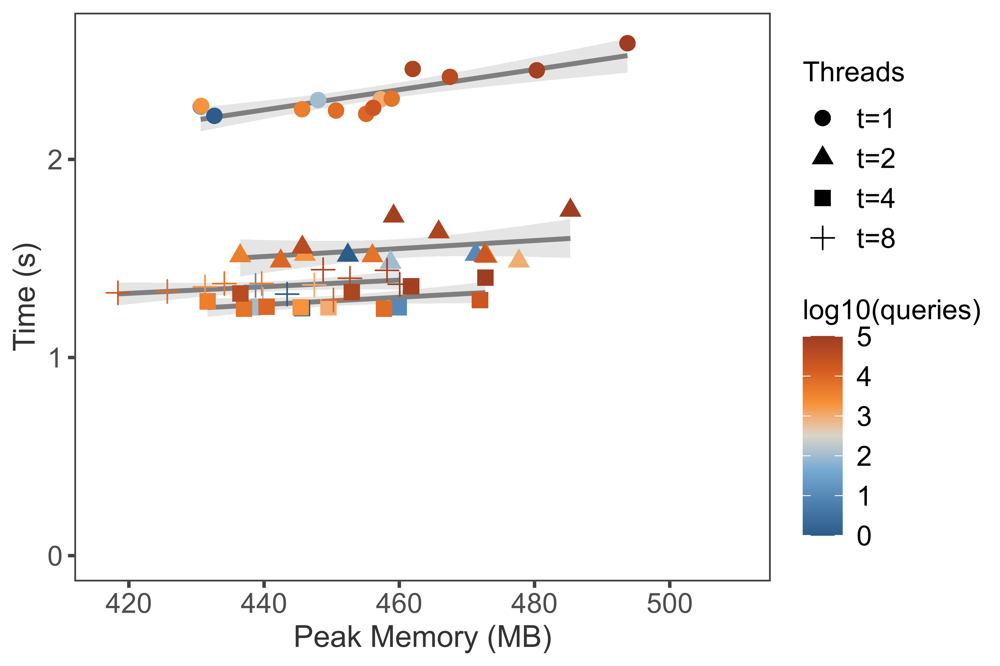

BenchmarkLink
Benchmark 1: Getting lineageLink
Data setLink
-
NCBI taxonomy, version 2021-01-21
-
TaxIDs. Root node
1is removed. And These data should be updated along with NCBI taxonomy dataset. Seven sizes of TaxIds are sampled fromnodes.dmp.# shuffle all taxids cut -f 1 nodes.dmp | grep -w -v 1 | shuf > ids.txt # extract n taxids for testing for n in 1 10 100 1000 2000 4000 6000 8000 10000 20000 40000 60000 80000 100000; do head -n $n ids.txt > taxids.n$n.txt done
SoftwareLink
- Loading database from local database:
- ETE, version: 3.1.2
- Directly parsing dump files:
EnvironmentLink
- OS: Linux 5.4.89-1-MANJARO
- CPU: AMD Ryzen 7 2700X Eight-Core Processor, 3.7GHz
- RAM: 64GB DDR4 3000MHz
- SSD: Samsung 970EVO 500G NVMe SSD
Installation and ConfigurationsLink
-
ETE
sudo pip3 install ete3 # create database # http://etetoolkit.org/docs/latest/tutorial/tutorial_ncbitaxonomy.html#upgrading-the-local-database from ete3 import NCBITaxa ncbi = NCBITaxa() ncbi.update_taxonomy_database() -
TaxonKit
mkdir -p $HOME/.taxonkit mkdir -p $HOME/bin/ # data wget -c ftp://ftp.ncbi.nih.gov/pub/taxonomy/taxdump.tar.gz tar -zxvf taxdump.tar.gz -C $HOME/.taxonkit # binary wget https://github.com/shenwei356/taxonkit/releases/download/v0.7.2/taxonkit_linux_amd64.tar.gz tar -zxvf taxonkit_linux_amd64.tar.gz -C $HOME/bin/ -
taxopy
sudo pip3 install -U taxopy # taxoopy identical dump files copied from taxonkit mkdir -p ~/.taxopy cp ~/.taxonkit/{nodes.dmp,names.dmp} ~/.taxopy
Scripts and CommandsLink
Scripts/Command as listed below. Python scripts were written following to the official documents, and parallelized querying were not used, including TaxonKit.
ETE get_lineage.ete.py < $infile > $outfile
taxopy get_lineage.taxopy.py < $infile > $outfile
taxonkit taxonkit lineage --threads 1 --delimiter "; " < $infile > $outfile
A Python script memusg was used
to computate running time and peak memory usage of a process.
A Perl scripts
run.pl
is used to automatically running tests and generate data for plotting.
Running benchmark:
$ # emptying the buffers cache
$ su -c "free && sync && echo 3 > /proc/sys/vm/drop_caches && free"
time perl run.pl -n 3 run_benchmark.sh -o bench.get_lineage.tsv
Checking result:
$ md5sum taxids.n*.lineage
# clear
$ rm *.lineage *.out
Plotting benchmark result.
R libraries dplyr, ggplot2, scales, ggthemes, ggrepel are needed.
# reformat dataset
# tools: https://github.com/shenwei356/csvtk/
for f in taxids.n*.txt; do wc -l $f; done \
| sort -k 1,1n \
| awk '{ print($2"\t"$1) }' \
> dataset_rename.tsv
cat bench.get_lineage.tsv \
| csvtk sort -t -L dataset:<(cut -f 1 dataset_rename.tsv) -k dataset:u -k app \
| csvtk replace -t -f dataset -k dataset_rename.tsv -p '(.+)' -r '{kv}' \
> bench.get_lineage.reformat.tsv
./plot2.R -i bench.get_lineage.reformat.tsv --width 6 --height 4 --dpi 600 \
--labcolor "log10(queries)" --labshape "Tools"
Result

Benchmark 2: TaxonKit multi-threaded scalabilityLink
Running benchmark:
$ # emptying the buffers cache
$ su -c "free && sync && echo 3 > /proc/sys/vm/drop_caches && free"
$ time perl run.pl -n 3 run_benchmark_taxonkit.sh -o bench.taxonkit.tsv
$ rm *.lineage *.out
Plotting benchmark result.
cat bench.taxonkit.tsv \
| csvtk sort -t -L dataset:<(cut -f 1 dataset_rename.tsv) -k dataset:u -k app \
| csvtk replace -t -f dataset -k dataset_rename.tsv -p '(.+)' -r '{kv}' \
> bench.taxonkit.reformat.tsv
./plot_threads2.R -i bench.taxonkit.reformat.tsv --width 6 --height 4 --dpi 600 \
--labcolor "log10(queries)" --labshape "Threads"
Result
